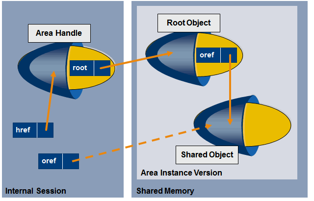

SAP NetWeaver AS ABAP Release 751, ©Copyright 2017 SAP AG. All rights reserved.
ABAP - Keyword Documentation → ABAP - Reference → Creating Objects and Values → Shared Objects → Shared Objects - Objects →Shared Objects - Root Object
Each area instance version contains an instance of the area root class that is identified as the root object.
The figure below shows how shared objects are accessed using the root object. The shared objects of an area instance version are accessed initially from an internal session, always by using the reference variable ROOT of the area handle that points to the root object.

The root object has to be defined with the instance method SET_ROOT of the area handle before the lock is released with the method DETACH_COMMIT of the area handle after writes.
Once an area handle has been bound to an existing area instance version, a reference to the root object can be obtained by reading the attribute ROOT (or even using the instance method GET_ROOT) of the area handle. The root object can then contain object and data references to further shared objects of the area instance version and also return them.